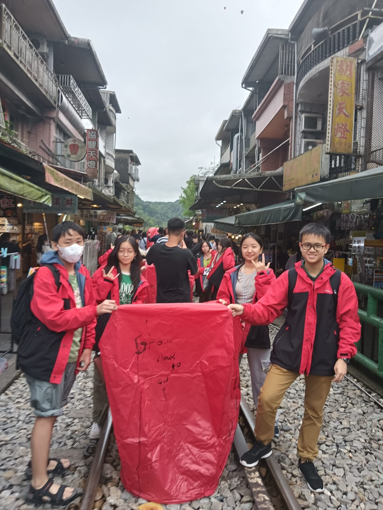
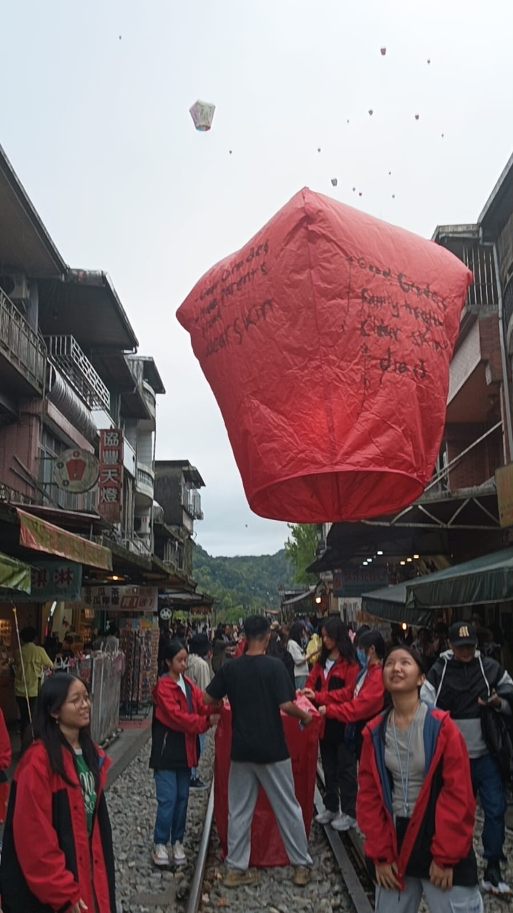

Angela Benedette Pranoto 8A / 02
Saat berkunjung ke Shifen Old Street, saya bersama 3 teman meluncurkan sebuah lantera besar. Kegiatan ini berkaitan dengan materi PPKN tentang tradisi, budaya, dan kearifan lokal. Tradisi ini merupakan salah satu budaya Taiwan, di mana orang-orang menuliskan harapan atau doa di sisi-sisi lantera, lalu menerbangkannya ke langit karena mereka percaya bahwa harapan tersebut akan mencapai surga dan didengar oleh dewa atau dewi. Setiap warna lantera memiliki maknanya masing-masing, namun kami menggunakan lantera merah yang melambangkan kebahagiaan dan keberuntungan. |
|
|  |  |